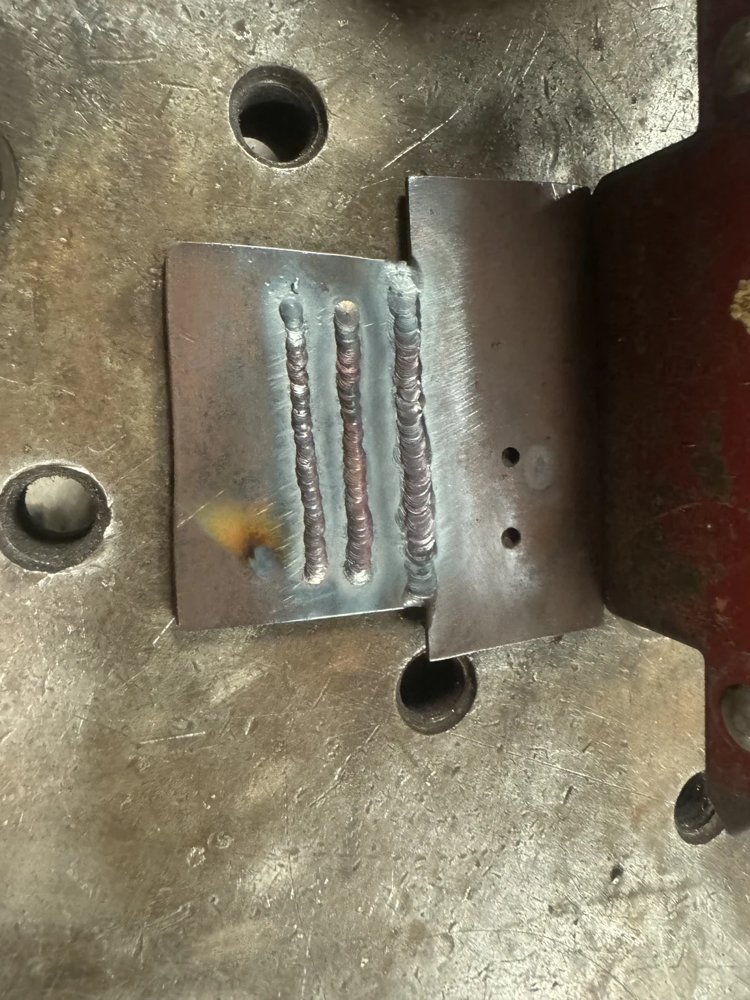

01 / Situation
From the classroom into the shop
I joined Women’s Baja SAE during my first year at Embry-Riddle as my first engineering club. I wanted hands-on experience and a clearer understanding of actual vehicle fabrication and assembly.
Project 02 / Fall 2023 – Fall 2024
My first engineering club at Embry-Riddle—and my first hands-on experience with vehicle fabrication and assembly.
Baja SAE teams build off-road competition vehicles. Women’s Baja SAE introduced me to the manufacturing side of engineering and how classroom ideas translate into physical hardware.
I joined Women’s Baja SAE during my first year at Embry-Riddle as my first engineering club. I wanted hands-on experience and a clearer understanding of actual vehicle fabrication and assembly.
My goal was to support the team and learn as many manufacturing skills as possible. I helped with vehicle assembly, TIG welding, filing, cleaning and preparing parts, basic fabrication, and shop tasks alongside experienced members.
I regularly worked in the shop, practiced TIG welding to improve consistency, and helped assemble and prepare vehicle components. I assisted with filing, cleanup, fit-up, and other manufacturing tasks, learning directly from more experienced team members. Later, I helped newer members by sharing welding tips and techniques I had learned.

Baja gave me my first real exposure to hands-on manufacturing. I improved my TIG welding skills, gained vehicle-assembly experience, and became more comfortable with tools and physical hardware. Working in the shop helped me build confidence and understand how much manufacturing depends on teamwork.